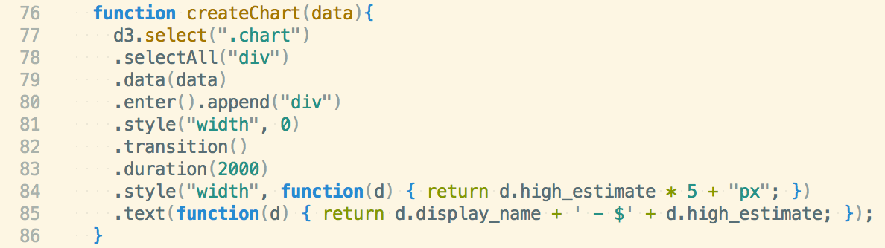

For our first project during week 3 at MakerSquare, we were tasked with using what we've learned during the first two weeks of the program and creating something using D3.js. I partnered up with my friend Jeff, and we decided to make a tool that'd estimate Uber fares to select destinations from MakerSquare LA.
Here's a picture of the final product: 'high estimates' for a ride to LAX from the MakerSquare offices in Santa Monica.In case you're not familiar with D3.js, it's a JavaScript library used to help you "bring data to life". It allows you to bind arbitrary data to the DOM, then apply transformations to your document based on the data. Here's a great collection of D3 projects you can check out to give you an idea of it's power: D3 Gallery
For this project, Jeff and I noted during pre-planning that we would have to: successfully make AJAX calls to the Uber API, properly parse the received data to only store the properties we wanted, use D3 to append the data to our DOM, and use jQuery to add some event handlers for allowing the user to pick a destination.
Uber API
The first step of our project was to figure out how and what data to pull from Uber. After a few issues with authentication, we were able to successfully make the GET request from their price estimates endpoint. This allowed us to get data such as high and low estimates for each type of Uber ride, distance and duration of the ride, surge multiplier at time of request, and minimum fare.
Data from Uber price estimates. We parsed the data to only include 'high_estimates' and 'display_name'.One thing to note here: to get pricing, you obviously need to give Uber coordinates (to/from) when you make the GET request. We initially wanted to do something where the user could type in their own to/from, and we'd submit the GET request with those coordinates, but seeing how we only had 2 days for this project, we decided to instead hardcode coordinates for just a few default places.
Our AJAX call basically works like this: when the page loads, we make a GET request to Uber with our pre-loaded coordinates, and then upon a success, we store the parsed data in a local object so that we could access it immediately. By doing this, we also avoided any problems with trying to display data before it's received.
D3
 Code snippet of D3.js in action.Now that we had the data, we needed a way to populate the DOM dynamically. That's where D3 comes in, and in my humble opinion, shines. The D3 methods that we used basically did the following: selected a 'chart' div that we were going to append our newly created child div's to, calculated and set the widths of each child div dynamically based on the price of each ride, added text to each child div based on the type of ride, and added animation. Another cool thing is that D3 allows you to chain methods, so you can really do a lot with just a few lines of code. As you can see below, our 'chart' div, which was empty in our index.html file, is now populated with exactly the data we want.
Here's how our DOM looks like after D3 does it's magic.Last but not least, we needed to add some listeners to our page, so that when the user clicks on a new destination, we could re-render the DOM based on the new data. For this we used jQuery, more specifically the '.on' method, which attaches an event handler function for one or more events to selected elements. Basically whenever a destination is clicked, we invoke the 'createChart' function above that utilizes D3 to re-render the DOM.
All in all, this project was a great learning experience, and it really showed us how powerful D3.js can be. I'm hoping to have a demo up soon for you all to check out.